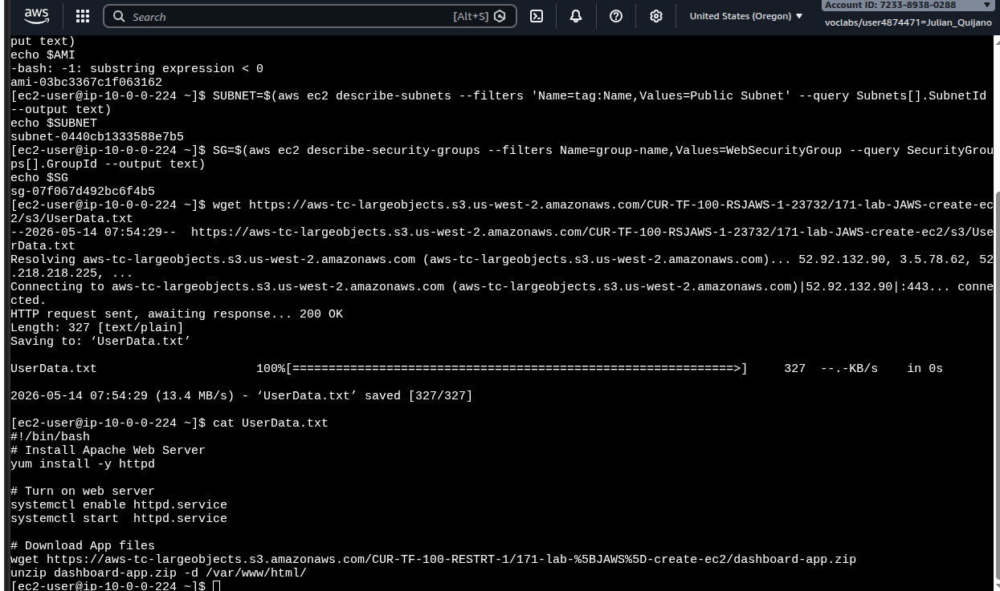
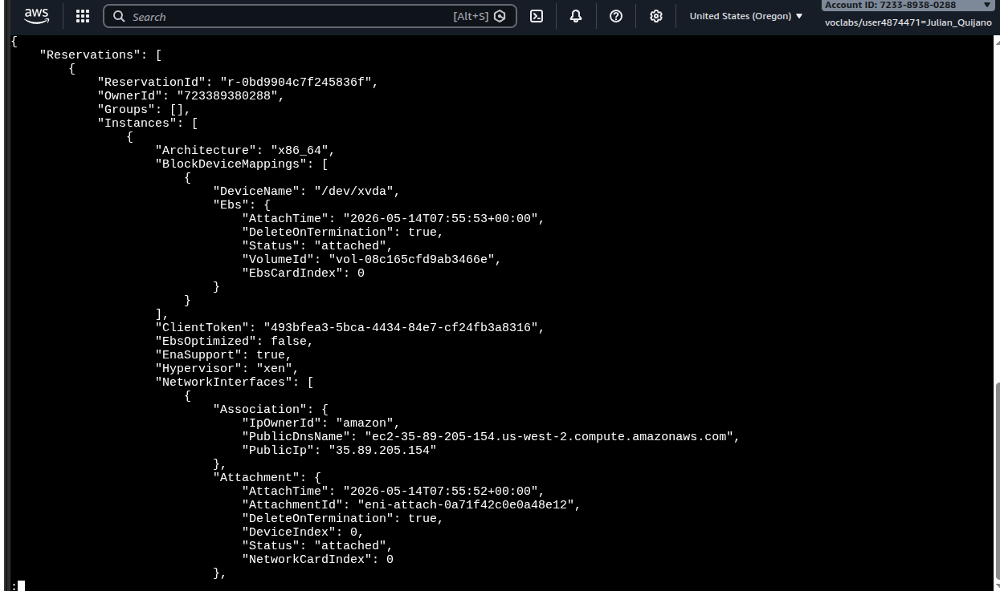
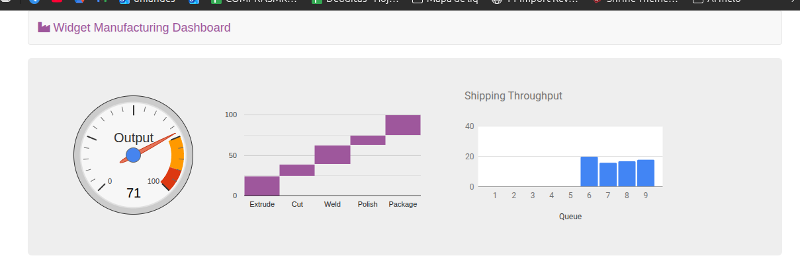

Launched a bastion host from the AWS Management Console and then, from
inside that bastion via EC2 Instance Connect, used the
AWS CLI to launch a second EC2 instance running an Apache web server with a
UserData bootstrap script. The bastion's IAM instance profile is what lets the
CLI call EC2 APIs without explicit credentials.
Lab Summary
End-to-end flow: launch a bastion from the Console → connect with EC2 Instance Connect →
resolve AMI / Subnet / Security Group dynamically via the CLI → run
aws ec2 run-instances with a UserData script that installs Apache and the
dashboard app → poll until running → open the public DNS in a browser.
Architecture
Both instances live in the same Public Subnet of the Lab VPC. The bastion has the IAM role;
the web server has no role because it only needs to serve HTTP.
Lab VPC · Public Subnet
Pre-provisioned by a CloudFormation template during lab setup.
Public subnet has auto-assign public IPv4 enabled.
Tag Name=Public Subnet — used later by the CLI filter.
Bastion host (Console-launched)
AMI: Amazon Linux 2 · Type: t3.micro
SG: Bastion security group — allows SSH (port 22).
IAM instance profile: Bastion-Role (lets CLI call EC2/SSM).
No key pair — access via EC2 Instance Connect.
Web Server (CLI-launched)
AMI: same Amazon Linux 2 (resolved dynamically via SSM Parameter Store).
SG: WebSecurityGroup — allows HTTP (port 80).
Bootstrapped by UserData.txt: httpd + dashboard-app.zip.
Tag Name=Web Server.
Data path
Browser → public DNS of Web Server (HTTP/80) → Apache → static dashboard files.
No screenshots for this phase — captured later, once already inside the bastion shell.
Documented here as compact parameter list since the choices are what matter, not the clicks.
01
Launch Bastion host from the Console
Name:Bastion host
AMI: Amazon Linux 2 AMI (HVM) · Instance type:t3.micro
Key pair:Proceed without key pair — connection is via EC2 Instance Connect, not SSH keys.
Network: Lab VPC → Public Subnet · Auto-assign public IP: Enable
Security group: create new — Bastion security group (permit SSH/22).
Advanced > IAM instance profile:Bastion-Role.
Why the IAM role matters: the bastion calls aws ec2 …
later. Without an instance profile, those calls would need static access keys baked
into the shell — bad practice. The role lets the bastion sign requests via IMDS
without ever holding long-lived credentials.
02
Connect with EC2 Instance Connect
Selected the bastion in the Console → Connect → EC2 Instance Connect tab → Connect.
Result: in-browser shell as ec2-user on the bastion (visible in the screenshots below as ec2-user@ip-10-0-0-224).
EC2 Instance Connect pushes a one-time SSH public key to the instance through the
EC2 API, valid for ~60 seconds. That's why no permanent key pair was needed.
Launching the Web Server via AWS CLI
From inside the bastion, the CLI workflow is: resolve Region → pull latest AMI from SSM →
look up Subnet and SG by tag/name → download UserData → run-instances → poll
state → fetch public DNS.
1. Region + AMI from instance metadata & SSM Parameter Store
bastion shell — resolve Region and latest Amazon Linux 2 AMI
# Get the Availability Zone from IMDS, then trim the trailing letter to get the Region.AZ=$(curl-s http://169.254.169.254/latest/meta-data/placement/availability-zone)exportAWS_DEFAULT_REGION=${AZ::-1}# Ask SSM for the latest Amazon Linux 2 AMI ID in this Region.AMI=$(aws ssm get-parameters \
--names /aws/service/ami-amazon-linux-latest/amzn2-ami-hvm-x86_64-gp2 \
--query'Parameters[0].[Value]' \
--output text)echo$AMI# → ami-03bc3367c1f063162
Gotcha observed in foto1:
right before $AMI printed, the shell logged
-bash: -1: substring expression < 0. That comes from ${AZ::-1}
when $AZ is empty or too short — typically a transient IMDS hiccup on the
first curl. In this lab the next commands worked, so the Region was effectively exported,
but the right hardening is to verify $AZ first (or use IMDSv2 with a token):
[ -n "$AZ" ] || { echo "IMDS empty"; exit 1; }.
2. Subnet and Security Group by tag / name
bastion shell — resolve target network
# Subnet ID by tag Name=Public Subnet.SUBNET=$(aws ec2 describe-subnets \
--filters'Name=tag:Name,Values=Public Subnet' \
--query Subnets[].SubnetId \
--output text)echo$SUBNET# → subnet-0440cb1333588e7b5# Security group ID for the WebSecurityGroup (allows HTTP/80 inbound).SG=$(aws ec2 describe-security-groups \
--filters Name=group-name,Values=WebSecurityGroup \
--query SecurityGroups[].GroupId \
--output text)echo$SG# → sg-07f067d492bc6f4b5
3. UserData bootstrap script
Downloaded the script from the lab S3 bucket with wget and inspected it with
cat. The file is what the new instance will execute as root on first boot.
UserData.txt — runs on first boot of the Web Server
#!/bin/bash# Install Apache Web Serveryum install -y httpd
# Turn on web serversystemctl enable httpd.service
systemctl start httpd.service
# Download App files and serve from /var/www/htmlwget https://aws-tc-largeobjects.s3.amazonaws.com/CUR-TF-100-RESTRT-1/171-lab-%5BJAWS%5D-create-ec2/dashboard-app.zip
unzip dashboard-app.zip -d /var/www/html/

foto1 · bastion shell (ec2-user@ip-10-0-0-224): AMI resolved via SSM
(ami-03bc3367c1f063162), subnet (subnet-04…b5) and SG
(sg-07f0…f4b5) looked up by tag/name, wget of UserData.txt
returning 200 OK · 327 bytes, and cat showing the
Apache + dashboard bootstrap. Note the
-bash: -1: substring expression < 0 warning above echo $AMI.
Every CLI parameter mirrors a Console field: --image-id = AMI choice,
--subnet-id = network step, --security-group-ids = firewall step,
--user-data = the bootstrap, and --tag-specifications applies the
Name tag at create time so the instance shows up labeled in the console list.
5. Poll state & get public DNS
bastion shell — wait for running, then fetch the URL
# Repeat until it prints "running".aws ec2 describe-instances --instance-ids$INSTANCE \
--query'Reservations[].Instances[].State.Name' \
--output text
# Then grab the public DNS name to open in a browser.aws ec2 describe-instances --instance-ids$INSTANCE \
--query Reservations[].Instances[].PublicDnsName \
--output text

foto2 · full describe-instances JSON. Visible:
Architecture: x86_64, root volume vol-08c1…66e attached at
/dev/xvda, and the key field
PublicDnsName: ec2-35-89-205-154.us-west-2.compute.amazonaws.com
(PublicIp 35.89.205.154) — that's the URL used in the next step.
Verifying the web server
Pasted the public DNS into a browser tab. The instance answered HTTP on port 80 with the
dashboard that UserData unzipped into /var/www/html/.

foto3 · Widget Manufacturing Dashboard rendered at
http://ec2-35-89-205-154.us-west-2.compute.amazonaws.com/. Output gauge
at 71, the cascade chart (Extrude → Cut → Weld → Polish → Package), and the Shipping
Throughput bars for queues 6–9. End-to-end proof: httpd running,
dashboard-app.zip unpacked, SG/NACL/route table all permitting HTTP from
the internet.
Console vs CLI vs CloudFormation
The lab finishes with a take on when each launch method fits.
Management Console
Best for one-off or exploratory launches. Good for learning what
fields exist and what the defaults are. Not repeatable.
AWS CLI / scripts
Repeatable automation with low overhead. Same command runs in a
shell, a cron, a CI job. Pairs well with IAM roles to avoid hard-coded credentials.
CloudFormation
When you need a set of related resources (VPC + subnets + SG +
instances + role) created and destroyed as one unit, with drift detection and
rollback on failure.
Optional challenges — not performed
The lab guide includes two optional troubleshooting challenges on a pre-existing
Misconfigured Web Server instance. They were not performed
in this run, so they are intentionally left out of this report instead of fabricating a
diagnosis.
Challenge 1 · Connect to the misconfigured server
Goal would have been to diagnose why EC2 Instance Connect fails
against Misconfigured Web Server and fix the misconfiguration.
Not done.
Challenge 2 · Fix the web server install
Goal would have been to open the public DNS of that same instance, diagnose why the
site doesn't load, and fix the issue.
Not done.
Key Learnings
What stuck
✓
An IAM instance profile turns an EC2 instance into a trusted
CLI client — no access keys needed.
✓
SSM Parameter Store has a public path for the latest Amazon
Linux 2 AMI per Region; great for scripts that should always pick the patched image.
✓
describe-subnets and describe-security-groups with
--filters + --query make CLI scripts deterministic even
when IDs change between accounts.
✓
--user-data file://… is the same bootstrap mechanism as the
Console's Advanced > User data field, just expressed as a CLI flag.
✓
${AZ::-1} over IMDS output is brittle — if the
first metadata call returns empty, the substring expression errors out. Worth
guarding in real scripts.
Technical takeaway
The bastion pattern shown here is the seed of more elaborate setups: a small,
hardened instance with an IAM role becomes the "control plane" you SSH/Connect into,
and from there you operate on the rest of the fleet through APIs. The web server
never holds credentials — it only serves HTTP and is replaceable in seconds because
everything it needs is encoded in UserData.
The same flow scales naturally to CloudFormation: the parameters
passed to run-instances become a AWS::EC2::Instance
resource block, and the role + SG + subnet become sibling resources in the template.